A linguagem C2.1
A linguagem C destaca-se como uma das linguagens de alto nível mais bem-sucedidas e amplamente utilizadas na história da computação. Por ser classificada como uma linguagem de alto nível, ela oferece um grau de abstração elevado, o que a aproxima consideravelmente da linguagem humana e a distancia da complexidade direta do código de máquina. Desenvolvida originalmente em 1972 por Dennis Ritchie nos Laboratórios Bell, a linguagem passou por um processo de revisão e padronização pelo American National Standards Institute (ANSI) em 1989. Sua estrutura é notavelmente simples e possui uma grande portabilidade, de modo que é raro encontrar uma arquitetura de computador que não suporte um compilador C. Somado a isso, os compiladores desta linguagem são conhecidos por gerar códigos extremamente enxutos e velozes quando comparados a diversas outras linguagens existentes.
Embora seja de alto nível, a linguagem C permite o acesso direto à memória e ao microprocessador, unindo a facilidade de abstração com o controle preciso do hardware.
Este capítulo apresenta a linguagem C como uma linguagem procedural, característica que permite a decomposição de problemas complexos em módulos menores e mais simples de resolver. Ela oferece funcionalidades poderosas, como o acesso de baixo nível à memória para a programação direta do hardware e a possibilidade de implementar instruções em Assembly, recurso essencial para lidar com problemas onde a dependência do tempo é crítica. Por fim, a linguagem C foi concebida para incentivar a programação multiplataforma, garantindo que programas escritos em seu código-fonte possam ser compilados para uma vasta gama de sistemas operacionais e plataformas com apenas ajustes pontuais.
Influência da linguagem C2.1.1
A influência da linguagem C no cenário tecnológico é vasta, tendo impactado, direta ou indiretamente, o desenvolvimento de diversas linguagens modernas, como C++, Java, C# e PHP. Este capítulo explora como os fundamentos estabelecidos por Dennis Ritchie serviram de base para a evolução de ferramentas que utilizamos até hoje.
A contribuição mais significativa e marcante da linguagem C reside em sua sintaxe. As linguagens mencionadas anteriormente herdaram e adaptaram a estrutura de declarações e a lógica de expressões da linguagem C, integrando-as aos seus próprios sistemas de tipos e modelos de dados. No exemplo a seguir, demonstra-se como a lógica de um comando para impressão de números no intervalo de 1 a 10 é implementada em diferentes linguagens, evidenciando essa semelhança estrutural.
for (int i = 0; i <= 10; i++)
{
printf("%d\n", i);
}
for (int i = 0; i <= 10; i++)
{
System.out.println(i);
}
for (my $i = 0; $i <= 10; $i++)
{
print "$i\n";
}
for ($i = 0; $i <= 10; $i++)
{
echo $i . PHP_EOL;
}
A maioria das linguagens modernas utiliza chaves { } para delimitar blocos e ponto e vírgula ; para encerrar instruções, uma herança direta do design da linguagem C que facilita a transição de programadores entre diferentes ecossistemas de desenvolvimento.
Utilizando o Code::Blocks para programar em C2.2
Existem diversos ambientes de desenvolvimento integrado, ou IDEs (Integrated Development Environment), que podem ser utilizados para a programação em linguagem C. Para o nosso curso, utilizaremos o Code::Blocks, uma IDE de código aberto e multiplataforma que suporta múltiplos compiladores. A escolha dessa ferramenta se deve ao fato de ela já estar devidamente instalada e disponível nos laboratórios que utilizaremos. Embora não seja o ambiente mais moderno ou visualmente atraente do mercado, o Code::Blocks é extremamente funcional e atende perfeitamente às necessidades pedagógicas deste curso.
Para aqueles que desejarem instalar o programa em seu próprio computador, o que é altamente recomendável para a prática, o vídeo abaixo, que detalha o processo de download e configuração no Windows 11 pode auxiliá-los.
Ao realizar o download, prefira sempre as versões que contenham "mingw-setup" no nome do arquivo. Isso garante que você instale não apenas a interface de desenvolvimento, mas também as ferramentas necessárias para compilar e executar seus programas sem a necessidade de configurações manuais complexas.
Criando um novo projeto no Code::Blocks2.2.1
Para iniciar o desenvolvimento de um software no Code::Blocks, é necessário estruturar o trabalho dentro de um projeto. Este processo organiza os arquivos e as configurações de compilação de forma eficiente. A seguir, detalhamos o passo a cada passo para configurar seu primeiro ambiente de trabalho.
Primeiramente, inicie o software Code::Blocks em seu computador. Ao abrir o programa, você será recebido pela tela inicial da ferramenta:
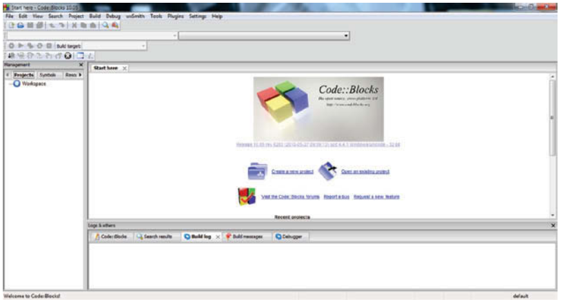
Para dar início à criação, acesse o menu superior e clique em File, selecione a opção New e, em seguida, escolha Project..., conforme ilustrado abaixo:
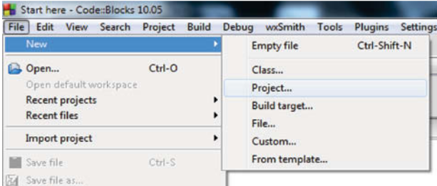
Uma janela com diversos modelos de projetos (templates) será exibida. Para os nossos propósitos acadêmicos e de lógica de programação, selecione a opção Console application, que permite criar programas que rodam em modo texto (terminal):
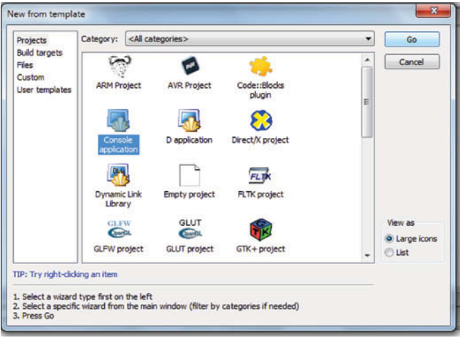
Caso este seja o seu primeiro projeto, uma tela de boas-vindas poderá aparecer. Se desejar que ela não surja novamente em projetos futuros, marque a opção Skip this page next time e clique em Next:
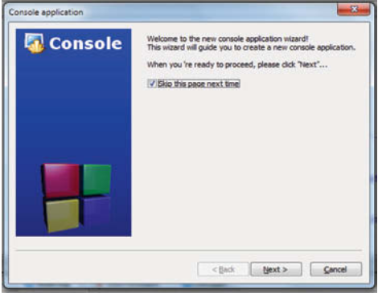
Na etapa de seleção de linguagem, é fundamental escolher a opção C antes de prosseguir clicando em Next:
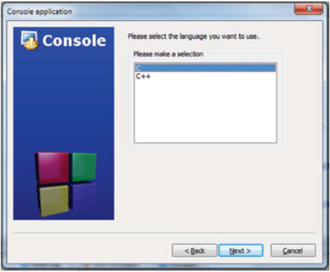
A tela seguinte define a identidade e o local do seu trabalho. No campo Project title, insira um nome significativo para o seu projeto. Já no campo Folder to create project in, clique no botão lateral para selecionar a pasta em seu computador onde os arquivos serão armazenados. Após definir esses campos, avance clicando em Next:
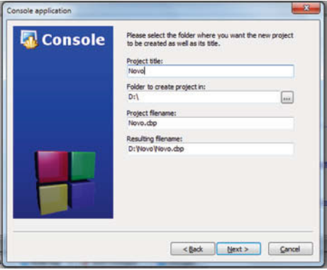
Neste momento, o assistente exibirá algumas configurações técnicas do compilador. Para as atividades deste capítulo, não é necessário modificar nenhum parâmetro nesta tela. Basta finalizar o processo clicando em Finish:
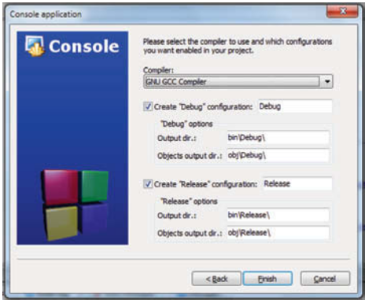
Ao concluir esses passos, a IDE gerará automaticamente a estrutura básica de um programa em C. O esqueleto do código aparecerá na área de edição, pronto para ser modificado:
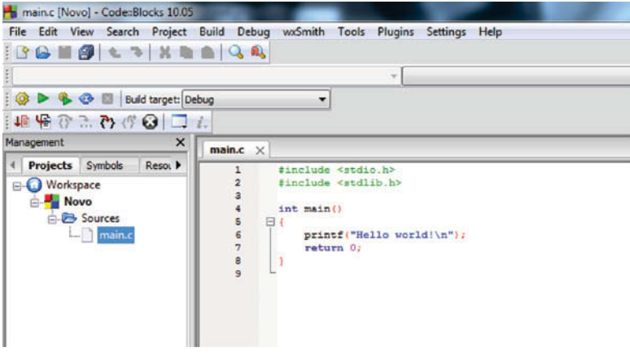
Para transformar seu código em um programa funcional, utilizamos as opções do menu Build. Essas ferramentas são essenciais para o ciclo de desenvolvimento:
- Compile current file (
Ctrl+Shift+F9): Esta opção traduz o arquivo de código-fonte atual para instruções de máquina, gerando um arquivo de objeto intermediário. - Build (
Ctrl+F9): Realiza a compilação de todos os arquivos do projeto e executa a "linkagem", processo que une seu código às bibliotecas necessárias para gerar o arquivo executável final. - Build and run (
F9): É o comando mais prático para o dia a dia, pois ele gera o executável e, logo em seguida, inicia a execução do programa para que você possa testar os resultados.
Lembre-se sempre de salvar suas alterações antes de realizar o Build, garantindo que a versão compilada seja a mais recente do seu trabalho.
Utilizando o debugger2.2.2
À medida que avançamos no estudo da programação, a complexidade dos nossos algoritmos aumenta naturalmente. Com isso, torna-se essencial aprender a examinar o código-fonte em busca de erros lógicos ou defeitos sutis. Para essa tarefa, utilizamos o depurador, ou debugger, uma ferramenta indispensável projetada para testar e "limpar" programas de falhas.
As principais funcionalidades de um debugger incluem:
- A execução do programa de forma passo a passo.
- A pausa do programa em pontos predefinidos, os chamados pontos de parada ou breakpoints, permitindo a inspeção detalhada do estado das variáveis naquele instante.
Para ilustrar o uso do debugger no Code::Blocks, considere o código de exemplo:
#include <stdio.h>
#include <stdlib.h>
int fatorial(int n){
int i, f = 1;
for(i = 1; i <= n; i++)
f = f * i;
return f;
}
int main(){
int x, y;
printf("Digite um valor inteiro: ");
scanf("%d", &x);
if(x > 0){
printf("X eh positivo\n");
y = fatorial(x);
printf("Fatorial de X eh %d\n", y);
} else {
if(x < 0)
printf("X eh negativo\n");
else
printf("X eh Zero\n");
}
printf("Fim do programa!\n");
system("pause");
return 0;
}
Todas as ferramentas de depuração estão concentradas no menu Debug. Para depurar seu programa com eficiência, siga este roteiro:
- Defina os breakpoints: Insira pontos de parada nas linhas 13 e 23. Você pode fazer isso clicando na margem direita ao lado do número da linha ou posicionando o cursor na linha e pressionando F5 (Toggle breakpoint). O ponto de parada é sinalizado por uma pequena esfera vermelha, como visto na imagem abaixo:
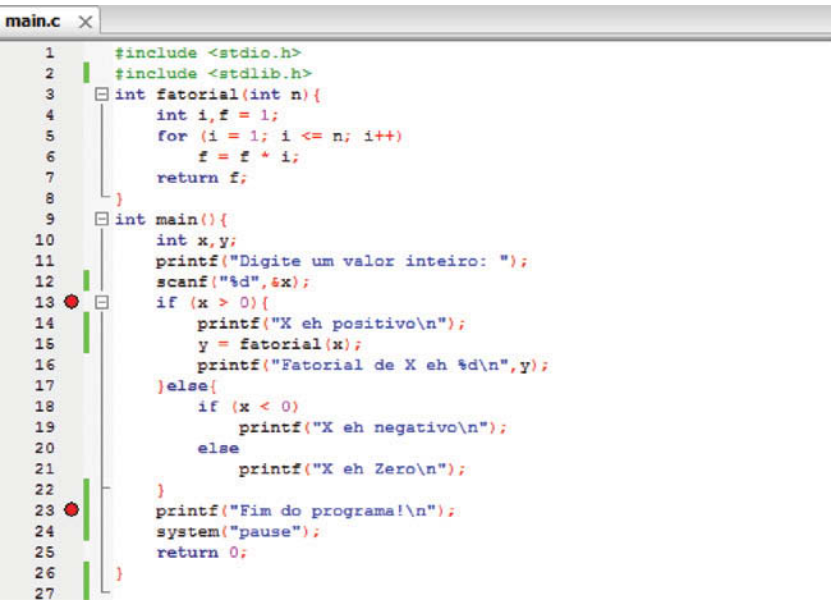
- Inicie a depuração: Selecione a opção Start (F8). O programa rodará normalmente até atingir o primeiro breakpoint. No caso do nosso exemplo, você deverá digitar o valor solicitado pelo
scanf()no console e, após o comando, o Code::Blocks pausará a execução. Note que um triângulo amarelo surgirá sobre a esfera vermelha, indicando exatamente onde o processamento foi interrompido, conforme abaixo:
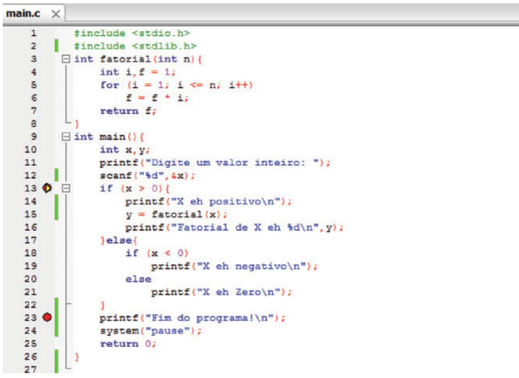
- Monitore as variáveis: Acesse o menu Debugging windows e habilite a janela Watches. Ela exibirá o valor em tempo real de todas as variáveis e parâmetros de funções. Alternativamente, você pode alterar o visual de toda a IDE para o modo de depuração em View > Perspectives > Debugging, facilitando a visualização dos dados.
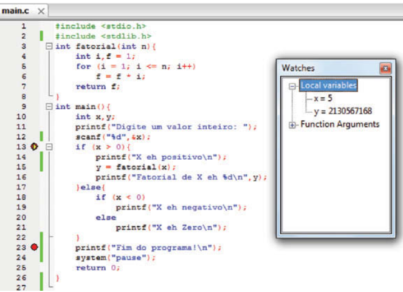
Avance passo a passo: Para mover a execução para a linha seguinte, utilize a opção Next line (F7). Isso permite acompanhar o fluxo do código linha por linha dentro do escopo atual.
Aprofunde-se em funções: Ao encontrar uma chamada de função, como
fatorial(x), o comando Next line (F7) apenas executará a função inteira e passará para a próxima instrução. Se você deseja entrar no código interno da função para analisá-lo, use o Step into (Shift+F7). O triângulo amarelo saltará para a primeira linha da função chamada, como mostra a imagem.
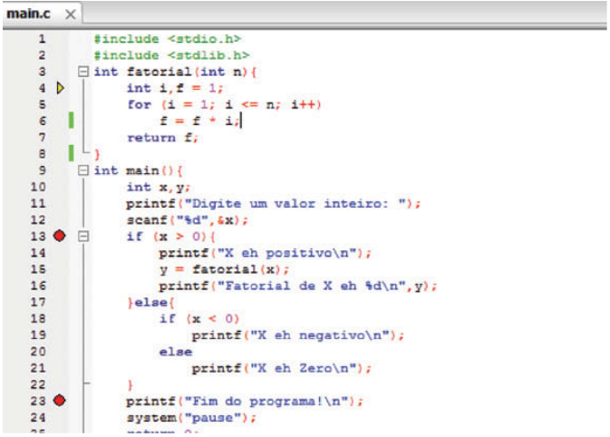
- Saia de funções: Dentro de uma função, você continua usando o Next line (F7). Se quiser concluir o restante da função instantaneamente e retornar ao ponto onde ela foi chamada, utilize o Step out (Shift+Ctrl+F7).
- Navegue entre paradas: Para ignorar o passo a passo e saltar diretamente para o próximo breakpoint disponível, utilize a opção Continue (Ctrl+F7).
- Encerre o processo: Quando terminar a análise, basta selecionar Stop debugger para retornar ao modo de edição normal.
Esqueleto de um programa em linguagem C2.2.3
Todo programa desenvolvido em linguagem C deve seguir uma estrutura fundamental, que serve como base para qualquer algoritmo, desde os mais simples até os mais robustos. Este "esqueleto" básico é ilustrado pelo código-fonte:
#include <stdio.h>
#include <stdlib.h>
int main(){
printf("Hello World \n");
system("pause");
return 0;
}
Embora este exemplo pareça trivial por apenas exibir a mensagem "Hello World", pausar e encerrar, ele é essencial para compreendermos os conceitos fundamentais da sintaxe de C, conforme detalhado na figura abaixo.
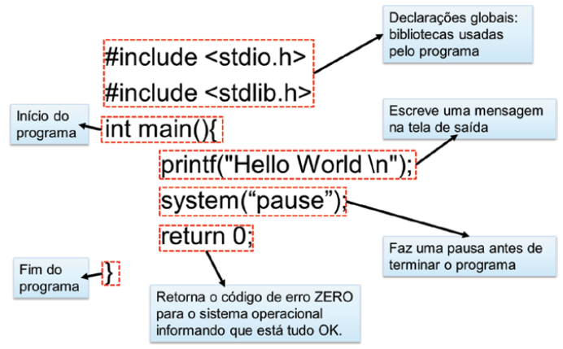
Abaixo, descrevemos minuciosamente cada componente dessa estrutura:
- Declarações Globais e Bibliotecas: No topo do código, localiza-se a região de definições válidas para todo o arquivo. O comando
#include <nome_da_biblioteca>é utilizado para importar bibliotecas, que são conjuntos de funções pré-programadas prontas para uso. No exemplo, incluímos astdio.h(responsável por operações de entrada e saída, como leitura de teclado e escrita em tela) e astdlib.h. - Função Principal
main(): Todo programa em C obrigatoriamente deve conter uma função chamadamain(). Ela marca o ponto exato onde a execução do programa começa, servindo como o "corpo" onde as instruções principais são inseridas. - Blocos de Comando: As chaves definem o início (
{) e o fim (}) de um conjunto de instruções. No esqueleto apresentado, elas delimitam o conteúdo que pertence à função principal. - Retorno de Valor: Como a função
main()foi declarada com o tipoint(inteiro), ela espera a devolução de um número ao sistema operacional. O comandoreturn 0;é utilizado ao final para sinalizar que a execução foi concluída com sucesso. - Função
printf(): Localizada na bibliotecastdio.h, esta função exibe mensagens de texto no terminal. O conteúdo deve estar entre aspas duplas e pode conter caracteres especiais, como o\n, que ordena uma quebra de linha (pular para a linha seguinte). - Comando
system("pause"): Definido nastdlib.h, este comando interrompe temporariamente a execução, permitindo que o usuário visualize os resultados na tela de saída antes que a janela do programa se feche automaticamente. - Finalização de Instruções: Em C, a maioria das declarações de comandos deve, obrigatoriamente, terminar com o caractere ponto e vírgula (
;). - Argumentos e Parênteses: Os parênteses delimitam a lista de argumentos de uma função — isto é, os dados que a função precisa receber para operar. No exemplo,
main,printfesystemsão identificados como funções justamente pela presença dos parênteses.
O uso do system("pause") é comum em ambientes Windows. Em outros sistemas operacionais, como Linux ou macOS, esse comando pode não ser necessário ou exigir alternativas para obter o mesmo efeito de pausa.
Indentação do código2.3
Outro aspecto fundamental que devemos considerar ao escrever um programa é a indentação do código. Trata-se de uma convenção de escrita de códigos-fonte que visa ajustar a estética do programa para auxiliar sua leitura e interpretação. A utilização correta da indentação torna o código muito mais legível e facilita manutenções futuras.
A indentação consiste no espaçamento, ou tabulação, inserido antes de iniciarmos a escrita do código em uma determinada linha. Seu principal objetivo é indicar visualmente a hierarquia dos elementos. No nosso esqueleto básico, os comandos printf(), system() e return possuem o mesmo nível hierárquico e, por estarem todos contidos dentro da função main(), recebem o mesmo recuo de espaçamento.
O ideal é sempre criar um novo nível de indentação para cada novo bloco de comandos iniciado. A importância dessa prática torna-se evidente quando observamos que o exemplo anterior poderia ser escrito em apenas três linhas sem qualquer prejuízo ao desempenho do software. Entretanto, essa forma de escrita impõe um alto grau de dificuldade para o programador, como pode ser observado abaixo:
#include <stdio.h>
#include <stdlib.h>
int main(){printf("Hello World \n"); system("pause"); return 0;}
Embora o compilador ignore espaços em branco e tabulações, bons programadores utilizam a indentação para "contar a história" da estrutura do código. Um código bem indentado é o primeiro passo para reduzir a ocorrência de erros lógicos.
A compilação do programa2.4
O código-fonte de um programa consiste em um conjunto de palavras e símbolos que descrevem as instruções a serem executadas. Embora seja escrito de uma forma que facilite a leitura pelos seres humanos, especificamente pelo programador, ele não possui significado direto para o hardware. O computador compreende exclusivamente códigos de máquina. Para transformar nossas instruções em algo executável, é necessário traduzi-las, processo ao qual damos o nome de compilação.
A compilação é fundamental para o desenvolvimento de softwares independentes da máquina utilizada, permitindo que um único código-fonte seja compilado para diferentes arquiteturas. Frequentemente simplificada como uma etapa única de tradução, a compilação é, na verdade, composta por um conjunto de etapas sucessivas, conforme descrito a seguir:
- Pré-processamento: Antes da tradução propriamente dita, o arquivo passa por um pré-processador. Nesta fase, o código original é convertido em um arquivo "expandido". Ocorre a remoção de comentários e a interpretação das diretivas de compilação (comandos iniciados pelo símbolo
#), preparando o terreno para as etapas seguintes. - Verificação sintática: O sistema verifica se o código-fonte foi escrito respeitando rigorosamente as regras da linguagem C. O objetivo aqui é localizar erros de sintaxe, como parênteses não fechados ou a ausência de ponto e vírgula ao final de uma instrução.
- Compilação: Cada arquivo de código-fonte é processado individualmente para gerar um arquivo objeto. Importante notar que, nesta fase, ainda não existe um arquivo que o usuário possa executar; o compilador produz apenas as instruções em linguagem de máquina correspondentes àquele trecho específico do código.
- Link-edição: A função do link-editor é unificar todos os arquivos objeto que compõem o sistema em um único arquivo executável. Este processo integra tanto os objetos gerados a partir do seu código quanto os arquivos objeto provenientes das bibliotecas utilizadas no programa.
Se ocorrer qualquer erro durante a verificação sintática, o processo de compilação é interrompido imediatamente, e o programador deve corrigir as falhas apontadas antes de tentar gerar o executável novamente.
Comentários2.5
Um comentário, como o próprio nome sugere, é um trecho de texto inserido no programa com o objetivo de descrever alguma funcionalidade ou explicar a lógica de um pedaço do código. É importante ressaltar que os comentários não alteram o funcionamento do programa, pois são completamente ignorados pelo compilador durante o processo de tradução. Eles servem, portanto, exclusivamente para auxiliar o programador na organização e compreensão do seu trabalho.
Um comentário pode ser adicionado em qualquer parte do código-fonte. Para isso, a linguagem C oferece duas formas distintas de implementação: por linha ou por bloco.
- Comentário de linha: Se o programador desejar comentar apenas uma única linha, basta adicionar
//no início do trecho. A partir desse símbolo, tudo o que for escrito até o final daquela linha será tratado como comentário. - Comentário de bloco: Caso seja necessário comentar múltiplas linhas consecutivas, utiliza-se a marcação
/*para iniciar o bloco e*/para encerrá-lo. Todo o conteúdo compreendido entre esses dois símbolos será ignorado pelo compilador. Veja o exemplo:
#include <stdio.h>
#include <stdlib.h>
int main(){
/*
A funcao printf()
serve para
escrever na tela
*/
printf("Hello World \n");
//faz uma pausa no programa
system("pause");
return 0;
}
Além de organizar o código, o uso de comentários é a base da documentação interna de um software. Documentar consiste em descrever a responsabilidade de cada bloco de comandos, uma tarefa crucial tanto para o desenvolvimento quanto para a manutenção de sistemas.
A presença de comentários bem estruturados permite que um programador compreenda rapidamente um código que nunca viu antes ou que o autor original relembre a lógica de um trecho implementado há muito tempo. Além disso, uma boa documentação aumenta significativamente as chances de um trecho de código ser reutilizado com segurança em outras aplicações.
Comente o "porquê" de uma decisão complexa, e não apenas "o que" o comando faz. Um código limpo deve ser autoexplicativo, mas a intenção por trás da lógica muitas vezes precisa de uma breve descrição.
Questões2.6
1. A linguagem C é classificada como uma linguagem de alto nível, mas possui características singulares que a tornam uma ferramenta poderosa para o desenvolvimento de sistemas. Com base no texto, assinale a alternativa que descreve corretamente essas características e sua classificação.
- A) É uma linguagem estritamente de baixo nível, o que impede a portabilidade de códigos entre diferentes arquiteturas de hardware.
- B) É uma linguagem orientada a objetos pura, criada para substituir o Assembly em tarefas que exigem controle crítico de tempo.
- C) É uma linguagem procedural de alto nível que permite acesso direto à memória e ao microprocessador, unindo abstração com controle de hardware.
- D) É uma linguagem interpretada, cujos códigos-fonte são executados linha a linha sem a necessidade de um processo de compilação ou link-edição.
2. A compilação não é uma etapa monolítica, mas sim um conjunto de processos sucessivos que transformam o código-fonte em um software funcional. Explique detalhadamente o que ocorre nas etapas de Pré-processamento e Link-edição, destacando o papel das diretivas de compilação e das bibliotecas externas.
3. Considere o esqueleto básico de um programa em C apresentado abaixo. Analise os componentes numerados e responda aos itens baseando-se estritamente nas definições do texto.
#include <stdio.h> // [1]
#include <stdlib.h>
int main(){ // [2]
printf("Olá"); // [3]
system("pause");
return 0; // [4]
}
- a) Qual é a função técnica da linha marcada como [1] e por que ela é necessária para o uso do comando na linha [3]?
- b) O texto afirma que a estrutura [2] é obrigatória. Explique o papel desta função no ciclo de vida da execução do programa.
- c) O comando na linha [4] retorna o valor 0. A quem esse valor é retornado e o que ele sinaliza neste contexto?
- d) Se o código fosse escrito em uma única linha, sem a formatação visual apresentada, ele funcionaria? Qual conceito de escrita de código seria violado?
- e) Identifique na linha [3] o caractere responsável por finalizar a instrução e explique sua obrigatoriedade.
4. Sobre a estrutura de comentários e a documentação interna do código, julgue as afirmações abaixo como Verdadeiras (V) ou Falsas (F):
- ( ) Comentários de bloco são iniciados com
//e servem para documentar múltiplas linhas consecutivas, sendo ignorados pelo compilador. - ( ) O compilador traduz os comentários para código de máquina a fim de exibir mensagens de ajuda ao usuário final do programa.
- ( ) A documentação interna, feita através de comentários, é crucial para a manutenção do sistema, permitindo que outros programadores compreendam a lógica por trás de decisões complexas.
- ( ) Se ocorrer um erro de sintaxe dentro de um comentário delimitado por
/*e*/, o processo de compilação será interrompido na etapa de verificação sintática. - ( ) A indentação e os comentários não alteram o desempenho ou o funcionamento do executável final gerado.
Próximos passos2.7
No próximo capítulo, Variáveis, aprofundaremos nosso estudo na manipulação de informações. Uma vez compreendida a estrutura básica e o ambiente de desenvolvimento, é essencial aprender como o computador armazena e processa dados na memória. Exploraremos a declaração de variáveis, os tipos primitivos (inteiros, reais, caracteres) e como utilizar especificadores de formato para interagir dinamicamente com o usuário.